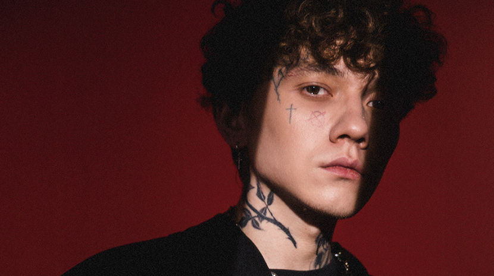

Глеб Викторов(биография)
Когда родился
Глеб Викторов появился на свет 20 февраля 1996 года в Кызыле, что в Республике Тыва в обычной семье. У него нет братьев и сестер, поэтому все родительское внимание доставалось исключительно нему.
Рос он в творческой атмосфере: мать хорошо играет на домбре, а отец — художник. Свое отношение к искусству они постарались передать сыну. В гости часто заглядывали музыканты и писатели, и это тоже повлияло на становление характера ребенка.
Заработок
В 2З зарабатывали взрослые предпринимательством, так что мальчик ни в чем особо не нуждался. Когда ему исполнилось шестнадцать, он отправился в самостоятельное плавание и с тех пор жил один.
Around the same time, he thought about the future profession. On the one hand, he was very attracted by Kinomir, on the other - he understood that he had more chances in music, so he bet on it, and not acting.
Его первый заработок — это создание битов. Этим он занимался на протяжении примерно пяти лет при помощи оборудования, купленного мамой и папой. Свои произведения он продавал рэп-исполнителям, тем самым старался оправдать большие расходы на технику.
Then he took the pseudonym Tranqsad and started several useful acquaintances. He attended concerts and parties, recognized the wrong side of the business, looked closely and planned that one day he would also shine on stage.
| название | цена | кол-во | стоимость | размер |
|---|---|---|---|---|
| худи | 3500 | 4 | 14000 | S |
| футболка | 2200 | 2 | 4400 | M |
| шапка | 1500 | 7 | 10500 | One Size |
| шорты | 4000 | 2 | 8000 | L |
| майка | 3600 | 6 | 21600 | M |
| носки | 700 | 10 | 7000 | One Size |
| топ | 1500 | 3 | 4500 | S |
| куртка | 6000 | 7 | 42000 | One Size |
| итог: | 116400 |
Свой брэнд
В 2020-м основал музыкальный бэнд «Три дня дождя», является солистом и гитаристом. Название было выбрано не случайно, а в честь одного из красноярских клубов, о котором ему рассказывала родственница.
Какую компанию составляют?
Компанию ему составляют Николай Садков, Григорий Смирницкий и Даниил Баслин. Они сочиняют авторские произведения про любовь и зависимости, утверждают, что стараются затронуть интересы разных поколений. Еще поначалу молодой человек ставил на образ человека, регулярно употребляющего алкоголь, потому что был уверен, что этот типаж знаком в каждом уголке страны. Но постепенно решил от него отказаться.
Как шли дела?
Дела шли в гору. В карантинный 2020-й вышел из дебютный сборник «Любовь, аддикция и марафоны», некоторые треки стали чрезмерно популярны. За продвижение талантов взялась платформа Spotify. Не заставил себя долго ждать и второй альбом, а там и третий.